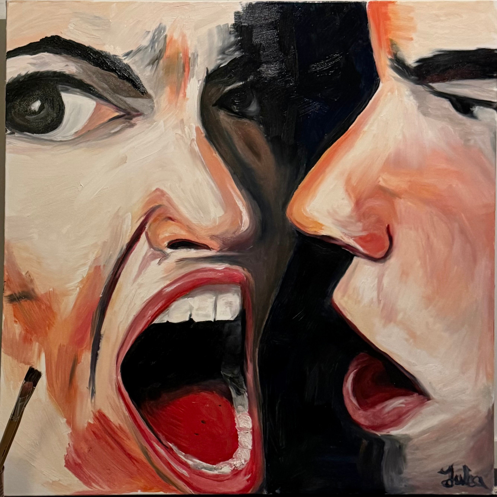

Rhythm

Some bonds don't arrive every day. And when they do, they come with full force, two souls caught in each other's gravity, unable to release. Stress, anger, tenderness, circling, returning, deepening.
What poisons you is the same thing that makes you feel most alive.
Rhythm arrived in a single surge, colours bought on impulse, done three hours later. That is how it always comes. When it is true, it doesn't ask permission.
photographed around amsterdam with people from town